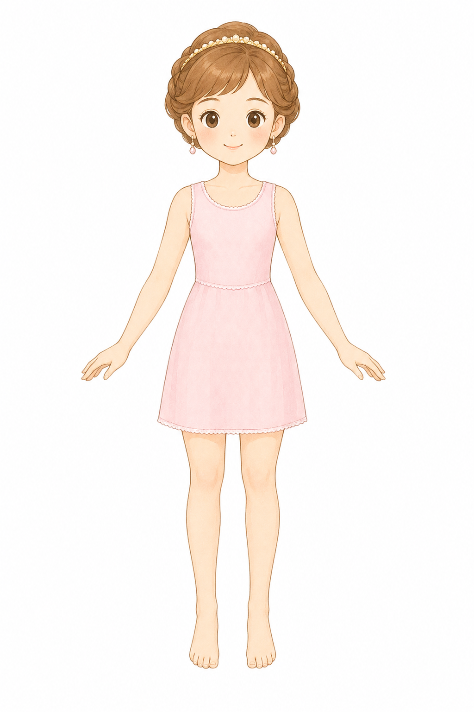
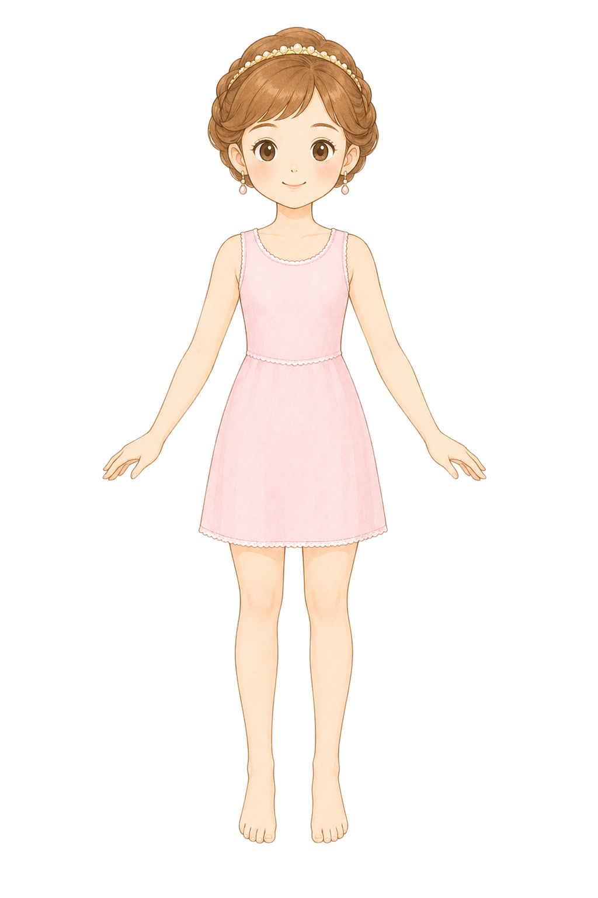
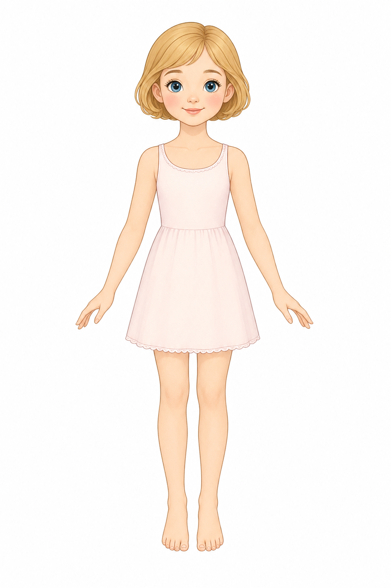
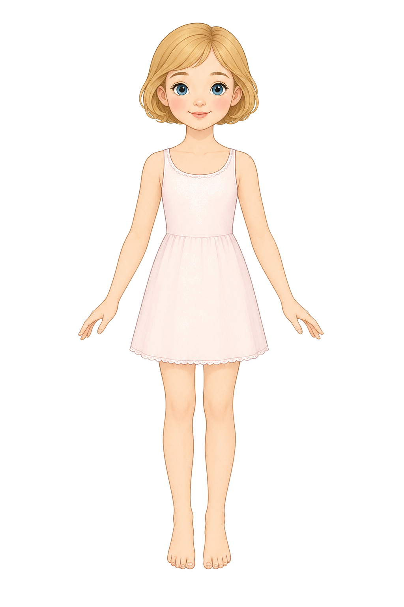
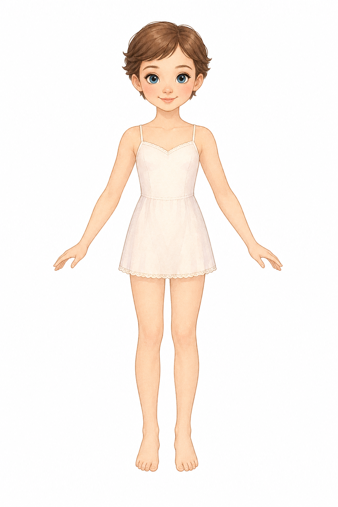
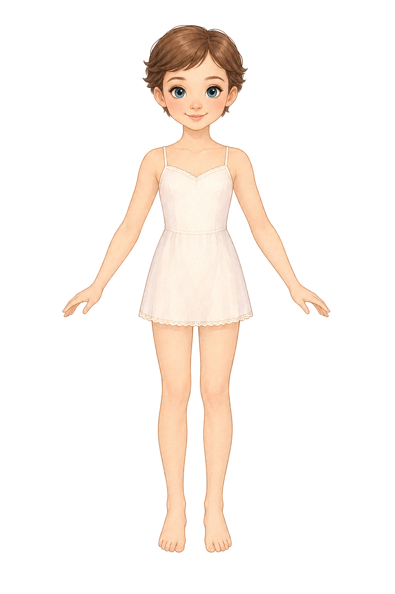
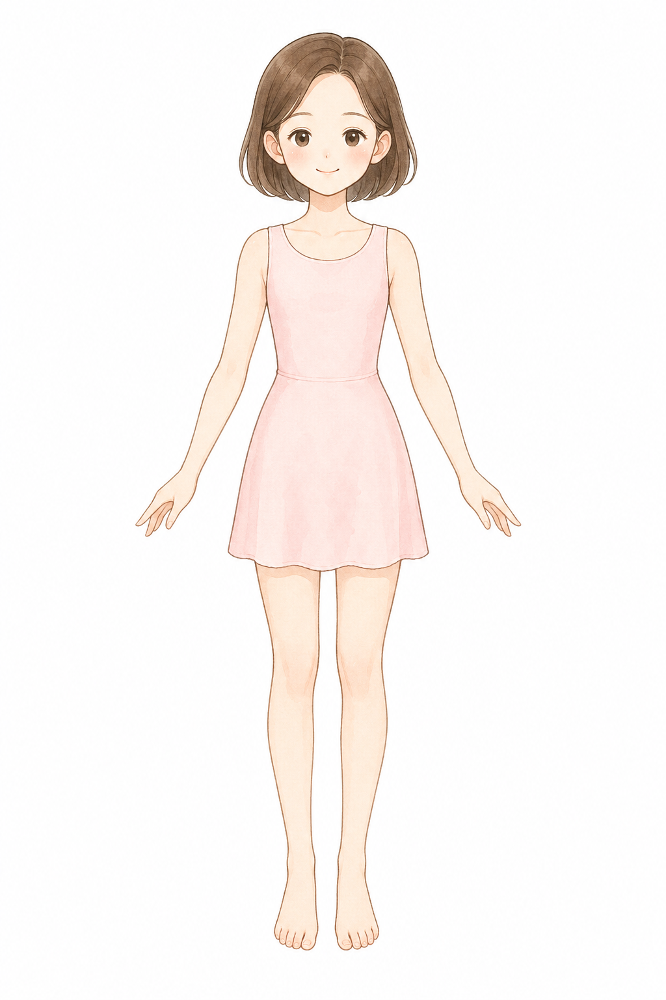

Generated with gpt-image-2. Raw images live in style-candidates/raw; cutouts live in style-candidates/cutout.
Style A: encyclopedia page
style-a-encyclopedia.png
ok
Raw

Cutout

pastel storybook encyclopedia illustration for a princess dress-up game, original non-realistic 2D paper doll mannequin, front view, full body, centered, compact Japanese children picture-book diagram feel, delicate simple line art, soft watercolor-like shading, gentle warm colors, small refined princess-fashion details, modest rounded proportions, friendly face, short tidy hair kept away from the torso, arms slightly away from the body, visible neck, shoulders, waist, ankles, and toes, simple pale pink sleeveless inner dress with a modest round neckline for necklace testing, plain pure white background, no props, no text, no watermark
Style B: princess paper doll
style-b-princess-paper-doll.png
ok
Raw

Cutout

original princess paper doll for a children dress-up game, pastel picture-book encyclopedia style, flat 2D illustration, clean delicate outlines, soft airy coloring, slightly decorative but simple enough for clothing overlays, front view, full body, standing straight, arms gently separated from the torso, short bob hair clear of shoulders and waist, visible neck, shoulders, waist, ankles, and toes, simple cream-pink inner dress with round neckline, child-friendly modest proportions, plain pure white background, no props, no text, no watermark
Style C: dress catalog
style-c-dress-catalog.png
ok
Raw

Cutout

children princess fashion encyclopedia base model, original flat 2D storybook diagram illustration, pastel colors, fine but readable linework, soft watercolor texture, dress catalog clarity with tiny elegant details kept subtle, front view, full body, symmetrical standing pose, arms slightly away for dress-up overlays, short neat hair not covering torso, visible neck, shoulders, waist, ankles, and toes, simple pale inner dress with necklace space at the neckline, plain pure white background, no props, no text, no watermark
Style D: clean encyclopedia base
style-d-encyclopedia-clean-base.png
ok
Raw

Cutout
pastel storybook encyclopedia illustration for a princess dress-up game, original non-realistic 2D paper doll mannequin, front view, full body, centered, compact Japanese children picture-book diagram feel, delicate simple line art, soft watercolor-like shading, gentle warm colors, refined but minimal princess feeling, no tiara, no earrings, no necklace, no hair accessories, no jewelry, no decorative props, short tidy bob hair kept away from the torso and neckline, arms slightly away from the body, visible neck, shoulders, waist, ankles, and toes, simple pale pink sleeveless inner dress with a modest round neckline for necklace testing, plain pure white background, no text, no watermark